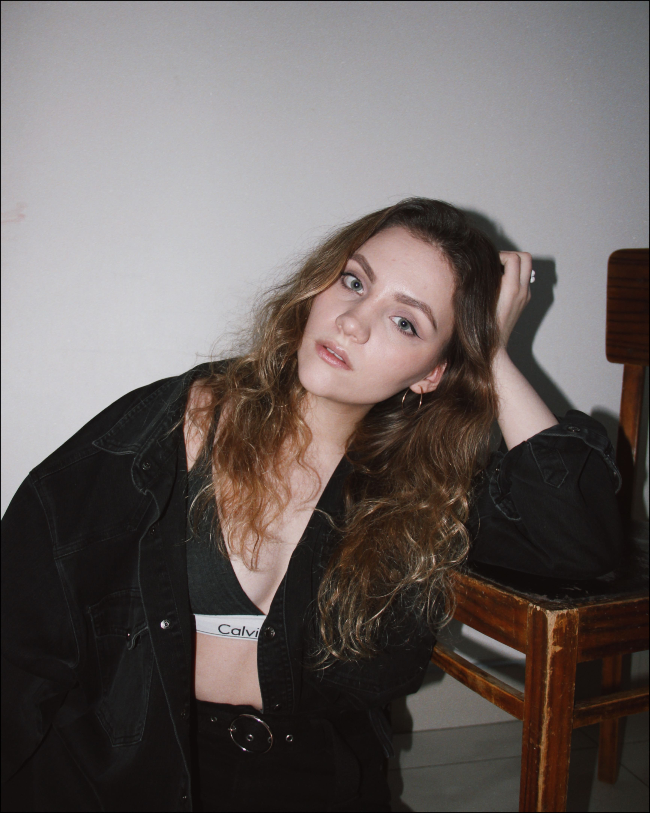
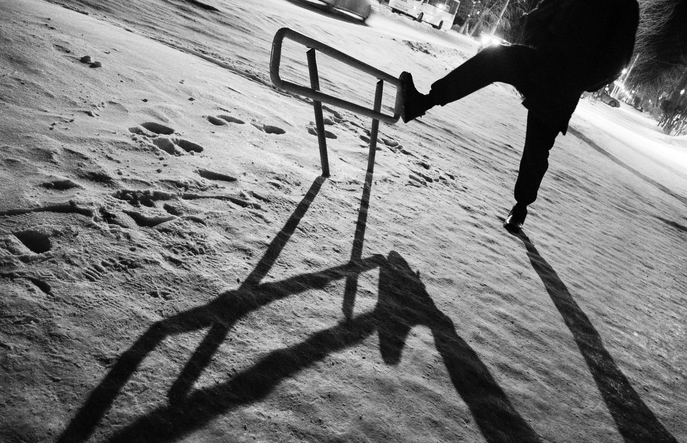
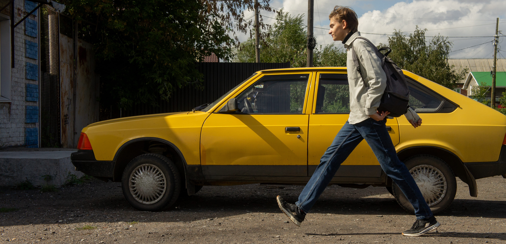
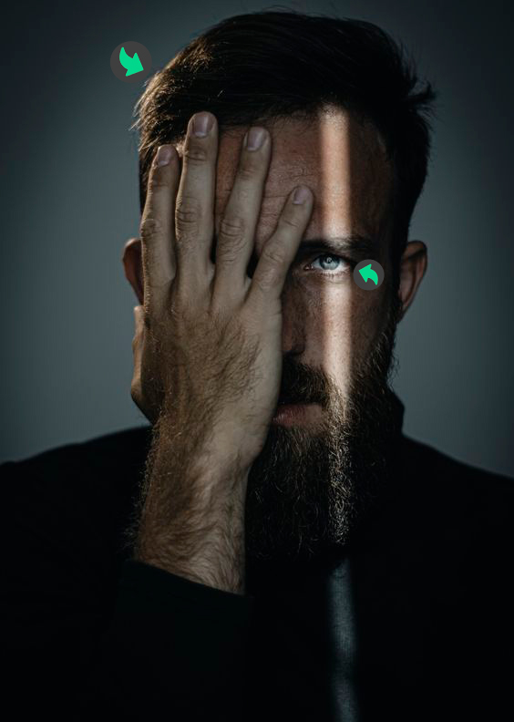
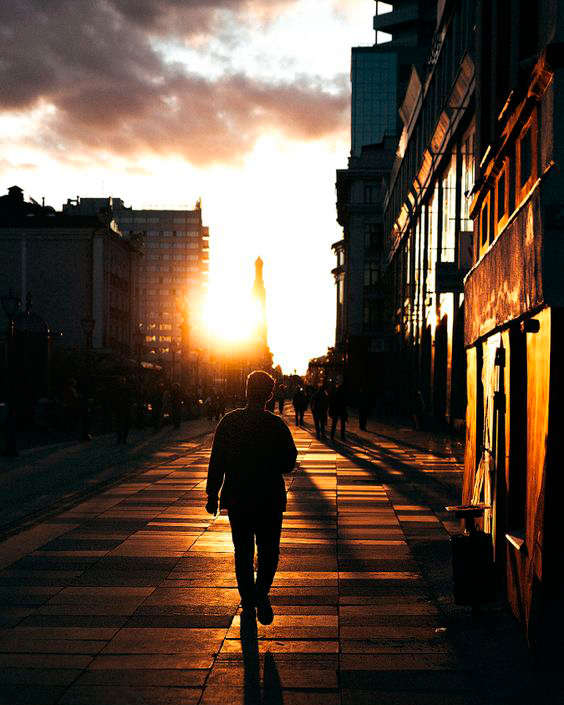
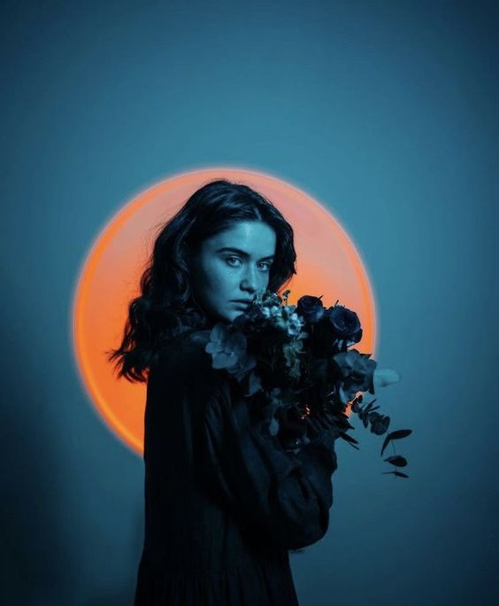

Виды света
в фотографии
Хорошая фотография всегда состоит из трех объективных факторов: свет, цвет, композиция.
Если ты не знаешь как работает свет и как его использовать, то тебе будет сложно сделать хорошую фотографию.
Просто посмотри на фотографию:
Свет может повлиять на настроение кадра. Разный свет может передать разные эмоции. Или добавить драматизма.
А какие бывают?
Ну, например:
1. Мягкий и жёсткий свет 2. Направленный, отраженный, рассеяный 3. Рисующий, заполняющий, моделирующий, контровой, фоновый 4. Естественный и искусственныйОго, как страшно всё звучит! Не бойся, я объясню для тебя.
Мягкий/Жёсткий
Что такое
жёсткий свет?
контраст между светом и тенью. Свет в тень переходят очень резко.
Характеризуется:
— контраст между светом и тенью. Свет в тень переходят очень резко.
— минимум полутонов (оттенков между черным и белым)
— тени становятся глубокими
— блики - ярко выраженны
— подчеркивается текстура/рельеф материала (если есть изъяны на коже, они будут вскрыты)
Факт
чем дальше источник освещения от модели, тем свет жёстче
Примеры жёсткого освещения:
свет в солнечный день
свет от вспышки без насадки
студийные источники освещения с рефлектором или насадкой соты / тубус
Что такое
мягкий свет?
плавные переходы между тенями и светлыми областями.
Все, что истинно для жесткого света — противоположно для мягкого.
Характеризуется:
— темных и резких теней нет
— кожа выглядит приятно
— чем ближе источник, тем мягче
Примеры мягкого освещения:
свет из окна
солнце как источник света в облачный день
свет в тени, в солнечный день
На этой фотографии, я нахожусь в тени здания, которого нет в кадре. Мягкое освещение получилось, но в тот день солнце не рассеивалось облаками.
Дело в том, что в тени есть рассеяные остатки освещения, от жесткого солнца. Здание рассеивает этот свет, а в его тени создается мягкое освещение.
вспышка/студийный источник с рассеивателем: фотозонтом или софтбоксом/октабоксом.
Направленный/Отраженный/Рассеяный
Что такое
направленный свет?
От слова "направлять". Нужно направлять свет на объект съемки.
Как вы поняли, направленный свет в сути жесткий.
Характеризуется:
— источник света должен быть мощный
— источник находится близко к объекту съемки
— чаще всего получается без доп. насадок
Примеры направленного освещения:
На самом деле, так как направленный свет является жестким, то все примеры ранее показанные в жестком освещении годятся и сюда. Но, я покажу еще парочку примеров.
свет вечером на улице
Свет направлен от какого-то уличного фонаря, который стоит за кадром.
свет от солнца
По сути, солнце — это тоже направленный свет. Единственное, надо подловить правильный момент, когда его направление будет подходить твоей идее.
свет в студии
Такой свет может получится с помощью софтбокса с сотами, направленного прямо на модель.
Что такое
отраженный свет?
Источник света отражаться от поверхности. Например, от зеркала или любого однородного материала.
Факты:
— Если свет отражается от белой поверхности, рефлекс будет сохранять натуральные краски.
— Если отражен от цветной поверхности, то будет давать цветные рефлексы/отражения.
— Отраженный свет - средний между жёстким и мягким.
— Для отражения света лучше всего использовать белую, однородную поверхность. Например, белая стена или потолок, рефлектор или отражатель.
Что такое
рассеяный свет?
Свет должен проходить через любой полупрозрачный материал. То есть рассеиваться.
В качестве рассеивателя может использовать кусок полупрозрачной ткани, лист бумаги, занавески или студийные зонты/софтбоксы.
Рассеянный свет – мягкий, дающий плавные переходы между светом и тенью на объекте съемки.
Примеры рассеяного освещения:
Здесь также подошли бы все примеры мягкого света. Ведь мягкий свет может получаться только тогда, когда рассеивается.
свет на улице в облачный день
Солнечный свет проходит сквозь облака. Облака тут — как полупрозрачный материал. Они рассеивают свет от солнца.
свет в помещении
На фоне видны источники освещения. Эти лампочки сами по себе имеют белый пластик, рассеивающий свет. И только под ним сам источник.
свет в студии
Такой свет может получится с помощью софтбокса. Софтбокс — большой рассеиватель света. Полупрозрачная ткань в качестве рассеивателя.
Рисующий/Заполняющий/Моделирующий/Контровой/Фоновый
Люди придумали кучу разных схем света в студийных условиях:
Во всех схемах света каждый источник света обозначается своим названием, обозначающим его роль во всей схеме света.
Разные названия нужны лишь для того, чтобы дать точные определения и не путать источники света.
Что такое
рисующий свет?
Прорисовывает основные объемы объекта, глубину, формирует тени т.е. создаёт светотеневой рисунок объекта.
Факты:
— Основной источник освещения в схеме постановки света.
— Источник рисующего света один.
— Самый мощный по сравнению с остальными.
— Является жёстким, направленным светом.
Что такое
заполняющий свет?
Заполняет тени светом.
То есть, он не может быть никогда по одиночке. Он всегда дополняет рисующий свет, так-как светотеневой рисунок задается только им. Заполняющий лишь может подсветить тени в уже существующем светотеневом рисунке.
Конкретно в фотографии ниже, главный рисующий источник света находится справа. Но, левая часть лица, которая находится в тени, засвечена заполняющим светом.
Но, как он получается? Можно предположить, что:
1) Свет отражается слева отражателем, следовательно заполняет светом левую сторону лица.
ИЛИ
2) Поставили дополнительный, менее мощный источник света слева, который бы заполнил тень лица.
ИЛИ
3) Рисующий источник света — окно. Соответственно, свет просто рассеивается и автоматически заполняет левую часть лица.
Факты:
— Делает тени рисующего источника более светлыми.
— Создает равномерное бестеневое освещение объекта.
— Выравнивает яркости светлых и темных областей, т.е. снижает контраст.
— Является мягким, рассеяным или отраженным светом.
Что такое
моделирующий свет?
Светит узко направленно в область объекта, которую надо выделить подсветкой.
В этой фотографии, по задумке моделирующий свет выделяет часть лица справа. + Отдельный источник света направлен на левую часть головы.
Факты:
— Моделирующий — только направленный.
— Создает блики в области.
— Не сильнее рисующего.
— Может быть любым по мягкости.
Но, как это не сильнее рисующего? Кажется, что рисующий свет темнее моделирующего. Даже с меньшей мощностью, чем рисующий, моделирующий распределяет свою яркость на маленькую зону и будет ярче. По этому и называется иногда акцентный свет, так как выставляет акцент в кадре.
Что такое
контровой свет?
Подсвечивает контур объекта, отделяя от фона. «Обводит» объект.
Контровой свет всегда должен быть за объектом съемки.
Закатное солнце — это тоже контровой свет. Присмотритесь к человеку, его силует обведён желтым светом.
Что такое
фоновый свет?
Подсвечивает фон в кадре.
Тут синий рисующий свет попадает на модель и на фон. Но, прямо за моделью стоит еще один источник оранжевого света.
Естественный/Исскустаенный
Что такое
естественный свет?
Излучается из природных источников. Например: солнце, звёзды или огонь.
Факт
Луна не источник освещения, она отражает свет от солнца.
Естественным светом в качестве солнца сложно управлять, к нему надо подстраиваться. Например, самый красивый свет от солнца получится в "золотой час", то есть в рассвет или закат.
Что такое
искусственный свет?
Любой источник света, который был создан людьми: от лампочки до студийных источников.
Ну как? Ощущаешь как важно понимать какое бывает освещение? Только за счет одного освещения можно выдумать кучу разных фотографий в одной и той же локации!
Читай мои другие статьи!
Лучшие зеркальные фотоаппараты 2024Дата публикации: 24.01.2024